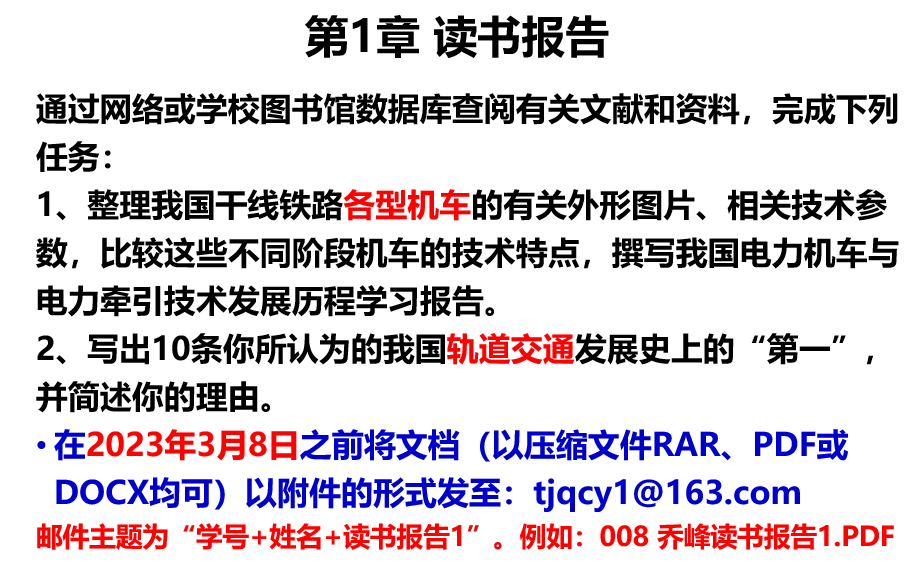
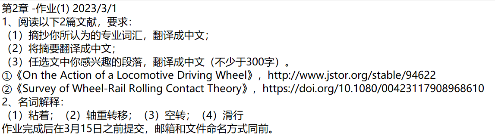
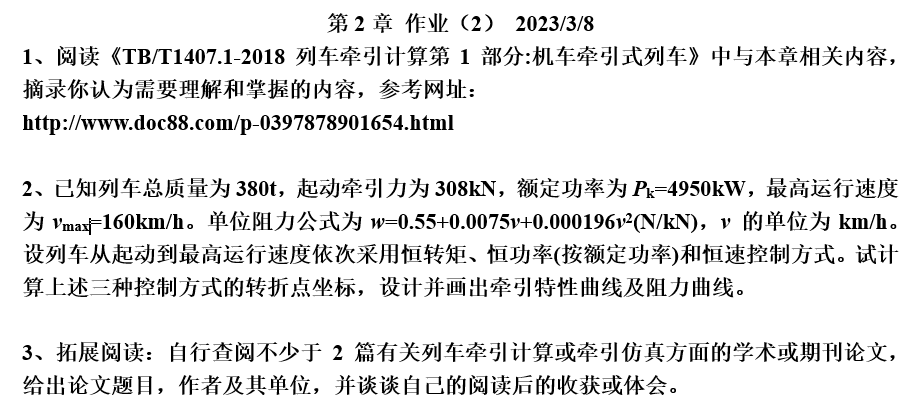
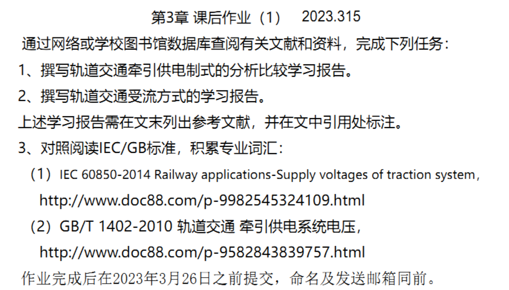
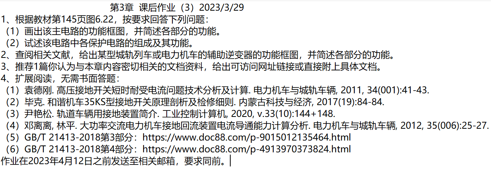
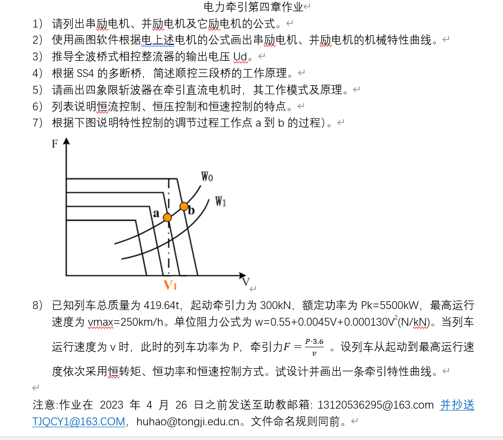
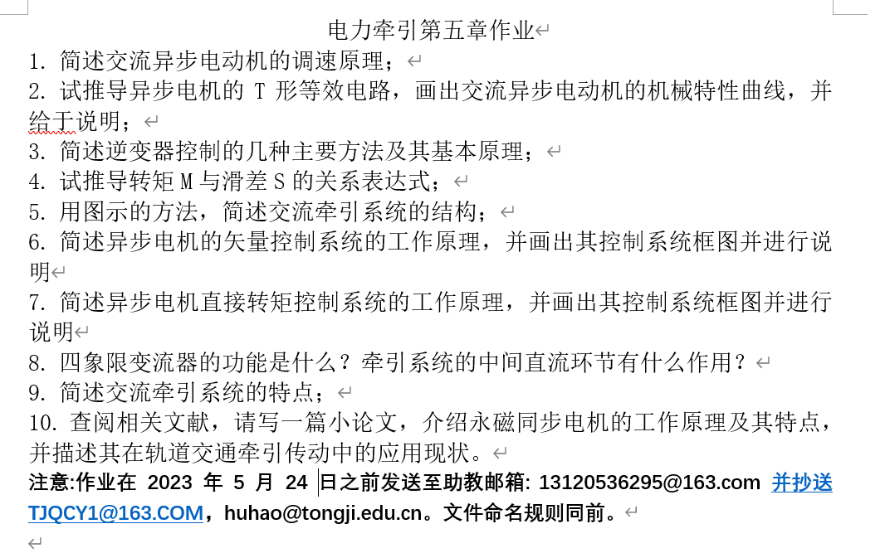
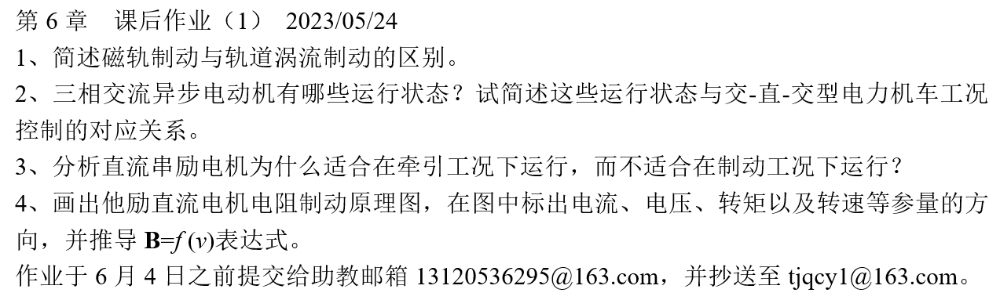
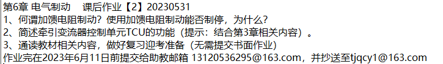
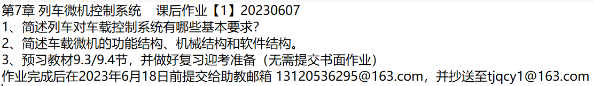

读书报告1
要求

收到的作业文件[50/52]
1951615吴宗泽_读书报告1(文件夹)
1951991 杨康_读书报告 1.docx
2050552杨家琛读书报告1.pdf
2050674 肖祺读书报告1.docx
2050817 王念 读书报告1(文件夹)
2050859 兰俊毅 读书报告1.docx
2050889刘普栋读书报告1.docm
2050962姚雯锦读书报告1(文件夹)
2051028 肖洋 读书报告1.docx
2051103-赵亚图-读书报告.docx
2051104魏吾达读书报告1.docx
2051146吴乐诗 读书报告1.docx
2051163 严梓豪读书报告1.pdf
2051164何鹏读书报告1(文件夹)
2051357张东海读书报告1.doc
2051386王国璋 读书报告1(文件夹)
2051388 潘胰增 读书报告1.docx
2051408 饶茜 读书报告1.pdf
2051512孙汤嘉禾读书报告1.pdf
2051598高溪悦 读书报告1.pdf
2051600高志扬_读书报告1.doc
2051600高志扬读书报告1.doc
2051658陈霄读书报告1(1).docx
2051768-张文阳-读书报告1.docx
2051873刘璧宁读书报告1.docx
2051884 甄楚晗读书报告1.docx
2051989 郑迅读书报告1.docx
2052042 施楷汶 读书报告1.docx
2052231 于淼 读书报告1.docx
2052232徐美欣读书报告1.pdf
2052359-张鹏祥-读书报告1.docx
2052359张鹏祥_读书报告1.docx
2052362 祝左容 读书报告1.pdf
2052557赵林轩读书报告1.pdf
2052741 黄雨康 读书报告1.docx
2052755-占杨-读书报告1.pdf
2052758夏晨曦读书报告1(文件夹)
2052759王洋读书报告1.docx
2052859陈镁云_读书报告1.pdf
2053329 秦之涣_读书报告1(文件夹)
2053426 张昕 读书报告1.docx
2053531 胡慧涛 读书报告1.docx
2053542于微雨_读书报告1.docx
2053543袁文昊读书报告1.pdf
2053784舒承程读书报告1.docx
2053785戴金真读书报告1.docx
2053950田程_读书报告1(文件夹)
2054209王德龙读书报告1(文件夹)
2054212 周彦铭 读书报告1.docx
2054437晋美朗杰_读书报告1(文件夹)
第二章作业1
要求

收到的作业文件[50/52]
1951615吴宗泽第二章作业一.doc
2050552 杨家琛 读书报告2.1.pdf
2050674 肖祺读书报告2.docx
2050817王念-第2章作业1.docx
2050859 兰俊毅 第2章作业（1）.docx
2050889刘普栋第2章作业（1）.doc
2050962姚雯锦读书报告2.docx
2051028 肖洋 第二章作业1.docx
2051103-赵亚图-读书报告2.pdf
2051104魏吾达读书报告2.doc
2051146吴乐诗 第二章作业（1）.docx
2051163 严梓豪读书报告2.1.pdf
2051164何鹏读书报告2.docx
2051357张东海 读书报告2.pdf
2051386王国璋-第二章作业1.docx
2051388 潘胰增 读书报告2.docx
2051389胡泓睿第二章作业.docx
2051408 饶茜读书报告2.pdf
2051512孙汤嘉禾_读书报告2(文件夹)
2051598高溪悦 作业第2章（1）.pdf
2051600高志扬读书报告2.docx
2051658陈霄读书报告2.docx
2051768-张文阳--第2章作业.docx
2051768-张文阳-读书报告2.docx
2051873刘璧宁读书报告2.docx
2051884 甄楚晗 读书报告2.docx
2051989郑迅 读书报告2.docx
2052042施楷汶 读书报告2.docx
2052231 于淼_第二章作业（1）.docx
2052232徐美欣读书报告2.docx
2052359-张鹏祥-第二章作业1.docx
2052362 祝左容 读书报告2.docx
2052557赵林轩第二次作业.pdf
2052741 黄雨康 读书报告2.docx
2052755-占杨-读书报告2.pdf
2052758-夏晨曦_第二章作业1.docx
2052758夏晨曦_读书报告2.docx
2052759 王洋读书报告2.docx
2052859陈镁云_读书报告2.pdf
2053329 秦之涣 读书笔记2(文件夹)
2053426 张昕 读书报告2.docx
2053531 胡慧涛 读书报告2.docx
2053542于微雨读书报告2.docx
2053543袁文昊读书报告2.docx
2053784舒承程读书报告2.docx
2053785戴金真读书报告2.docx
2053950田程读书报告2.docx
2054209王德龙读书报告2.docx
2054212 周彦铭 读书报告2.docx
2054437晋美朗杰-第二章（作业1）.docx
第二章作业2
要求

收到的作业文件[46/52]
1951615吴宗泽第二章作业二.doc
2050552 杨家琛 读书报告2.2.pdf
2050552 杨家琛 读书报告3.pdf
2050674 肖祺读书报告3.docx
2050817王念_第2章作业（2）.docx
2050859 兰俊毅 第2章作业（2）.docx
2050889刘普栋第二章作业（2）.doc
2050962 姚雯锦 第二章作业2(文件夹)
2051028肖洋_第二章作业2.pdf
2051103-赵亚图-读书报告3.pdf
2051104魏吾达第二章作业（2）.doc
2051146吴乐诗 第二章作业 （2）.docx
2051163 严梓豪读书报告2.2.pdf
2051164何鹏_第二章作业2.docx
2051357张东海读书报告三.pdf
2051386王国璋—第2章作业（2）.docx
2051388 潘胰增 读书报告3.pdf
2051389胡泓睿第二章作业(2).docx
2051408 饶茜读书报告3.pdf
2051512孙汤嘉禾_第二章作业2.docx
2051600高志扬第2章作业（2）.docx
2051658陈霄读书报告3.docx
2051873刘璧宁读书报告3.docx
2051884甄楚晗读书报告3.docx
2051989郑迅 读书报告3.docx
2052042施楷汶 读书报告2.2.docx
2052231 于淼 第2章作业（2）.docx
2052232徐美欣_第二章作业2.docx
2052359-张鹏祥-第二章作业（2）.docx
2052362 祝左容 读书报告3.pdf
2052557赵林轩_第二章作业2(文件夹)
2052741 黄雨康 读书报告3.docx
2052755-占杨-读书报告3.pdf
2052758-夏晨曦_第二章作业2.docx
2052759 王洋 读书报告3.docx
2052859陈镁云_第二章作业2.pdf
2053329 秦之涣_第二章作业2.docx
2053426 张昕 读书报告3.docx
2053531 胡慧涛 读书报告3.docx
2053542于微雨读书报告3.docx
2053784舒承程第2章作业（2）.docx
2053785戴金真读书报告3.docx
2053950田程_第二章作业二.docx
2054209王德龙读书报告3.docx
2054212 周彦铭_第二章作业2(文件夹)
2054437晋美朗杰_第二章作业2(文件夹)
第三章作业1
要求

收到的作业文件[47/52]
1951615吴宗泽电力牵引第三章作业一.doc
1951991杨康_第三章作业1 .docx
2050674 肖祺_读书报告4.docx
2050817王念-第3章课后作业（1）(文件夹)
2050859 兰俊毅 第3章课后作业（1）.docx
2050889刘普栋_第三章作业（1）.doc
2050962 姚雯锦 第三章作业1(文件夹)
2051028 肖洋 第三章课后作业（1）.docx
2051103-赵亚图-读书报告4.pdf
2051104魏吾达第三章作业（1）.doc
2051146吴乐诗_第三章作业（1） .docx
2051163 严梓豪读书报告3.1.pdf
2051164何鹏_读书报告4.docx
2051357张东海 读书报告4.pdf
2051386王国璋_第三章作业1(文件夹)
2051388 潘胰增 读书报告4.docx
2051389胡泓睿_第三章作业1.docx
2051408 饶茜的读书报告4.pdf
2051512孙汤嘉禾读书报告4.docx
2051600高志扬第三章课后作业（1）.docx
2051658陈霄_读书报告4.docx
2051768-张文阳-第三章作业1.docx
2051873刘璧宁_读书报告4.docx
2051884甄楚晗 读书报告4.docx
2051989郑迅_读书报告4.docx
2052042施楷汶读书笔记3.1.docx
2052231 于淼 第3章课后作业（1）.docx
2052232徐美欣读书报告4.pdf
2052359-张鹏祥-第三章作业（1）.docx
2052362 祝左容 读书报告4.pdf
2052557赵林轩第四次作业.pdf
2052741黄雨康_读书报告4.docx
2052755占杨_读书报告4.pdf
2052758夏晨曦_第三章作业1.docx
2052759王洋_读书报告4.docx
2052859陈镁云_第三章作业1.pdf
2053329 秦之涣 电力牵引技术作业4(文件夹)
2053426张昕_读书报告4.docx
2053531胡慧涛_读书报告4.docx
2053542于微雨读书报告4.docx
2053543袁文昊读书报告4.pdf
2053784舒承程读书报告4.docx
2053785戴金真读书报告4.docx
205390田程第三章作业一.docx
2054209王德龙_读书报告4.docx
2054212 周彦铭 读书报告4.pdf
2054437晋美朗杰 第三章作业1.docx
第三章作业2
要求
收到的作业文件[48/52]
1951615吴宗泽_电力牵引第三章作业二.doc
2050552杨家琛_读书报告3.2.pdf
2050674肖祺_第三章作业2.docx
2050817王念 第3章 课后作业（2）.docx
2050859兰俊毅_第3章 课后作业（2）.docx
2050889刘普栋_第3章课后作业（2）.doc
2050962姚雯锦_第三章课后作业2.docx
2051028肖洋_第三章作业（2）.docx
2051103赵亚图_读书报告5.pdf
2051104魏吾达_第三章作业（2）.docx
2051146吴乐诗_第3章作业（2）.docx
2051163严梓豪_读书报告3.2.docx
2051164何鹏_第三章作业2.docx
2051357张东海_读书报告5.pdf
2051386王国璋_第三章作业（2）.docx
2051388潘胰增_第三章（2）.pdf
2051389胡泓睿_第三章作业2.docx
2051408饶茜_读书报告5.pdf
2051512孙汤嘉禾_第三章作业2.docx
2051600高志扬_第三章课后作业（2）.docx
2051658陈霄_第3章课后作业（2）.docx
2051768张文阳_第三章作业（2）.docx
2051873刘璧宁_读书报告5.docx
2051884甄楚晗_读书报告5.docx
2051989郑迅_读书报告5.docx
2052042施楷汶_读书笔记3.2.docx
2052231于淼_第3章课后作业（2）.docx
2052232徐美欣_读书报告5.pdf
2052359张鹏祥_第三章作业（2）.docx
2052362祝左容_读书报告5.pdf
2052557赵林轩_第五次作业.pdf
2052741黄雨康_读书报告5.docx
2052755占杨_读书报告5.pdf
2052758夏晨曦_第三章课后作业（2）.pdf
2052759王洋_读书报告5.docx
2052859陈镁云_读书报告5.pdf
2053329 秦之涣_第三章作业2.docx
2053426张昕_读书报告5.docx
2053531 胡慧涛 读书报告5.docx
2053531胡慧涛_读书报告5.docx
2053542于微雨_读书报告5.pdf
2053543袁文昊_读书报告5.docx
2053784舒承程_第三章作业2.docx
2053785戴金真_读书报告5.docx
2053950田程_第三章课后作业二.docx
2054209王德龙_读书报告5.docx
2054212周彦铭_读书报告5.pdf
2054437晋美朗杰_第三章作业2 .pdf
第三章作业3
要求

收到的作业文件[45/52]
2050552杨家琛_读书报告3.3.pdf
2050674肖祺_读书报告6.docx
2050817王念 第3章 课后作业（3）.docx
2050859兰俊毅_第3章 课后作业（3）.docx
2050889刘普栋_第3章课后作业（3）.docx
2050962姚雯锦_第三章课后作业3.docx
2051028肖洋_ 第三章课后作业（3）.pdf
2051103赵亚图_第六次读书报告.pdf
2051104魏吾达_第三章课后作业（3）.docx
2051146吴乐诗_ 第3章作业（3）.docx
2051163严梓豪_读书报告3 .3.pdf
2051164何鹏_第三章课后作业3.docx
2051357张东海_读书报告6.pdf
2051386王国璋_第3章课后作业（3）.docx
2051388潘胰增_ 第三章（3）.docx
2051389胡泓睿_第三章作业3.docx
2051408饶茜_ 的读书报告6.pdf
2051512孙汤嘉禾_第三章作业3(文件夹)
2051600高志扬_第3章课后作业 (3).docx
2051658陈霄_第3章课后作业（3）.docx
2051768张文阳_第三章第三次作业.docx
2051873刘璧宁_第三章作业3(文件夹)
2051884甄楚晗_读书报告6.docx
2051989郑迅_ 读书报告6.docx
2052042施楷汶_读书报告3.3.docx
2052231于淼_ 第3章课后作业（3）.docx
2052232徐美欣_读书报告6.pdf
2052359张鹏祥_第三章作业（3）.docx
2052362 祝左容_读书报告6.pdf
2052557赵林轩_第六次作业.pdf
2052741黄雨康_读书报告6.docx
2052755占杨_读书报告6.pdf
2052758夏晨曦_第三章作业（3）.docx
2052759王洋_读书报告6.docx
2052859陈镁云_读书报告6.pdf
2053329秦之涣_ 电力牵引技术第六次作业.docx
2053426张昕_ 读书报告6.docx
2053531胡慧涛_ 读书报告6.docx
2053542于微雨_读书报告6(文件夹)
2053784舒承程_读书报告6.docx
2053785戴金真_读书报告6.docx
2053950田程_第三章课后作业三.docx
2054209王德龙_读书报告6.docx
2054212周彦铭_第三章作业3(文件夹)
2054437晋美朗杰_第三章课后作业（3）.pdf
第四章作业1
要求

收到的作业文件[45/52]
2050552杨家琛_读书报告7.pdf
2050674肖祺_读书报告7.docx
2050817王念-第4章作业.pdf
2050859兰俊毅_读书报告7.docx
2050889刘普栋_读书报告7.docx
2050962姚雯锦_读书报告7.docx
2051028肖洋_读书报告7.pdf
2051103赵亚图_读书报告7.pdf
2051104魏吾达_读书报告7.docx
2051146吴乐诗_第四章作业1.docx
2051163严梓豪_读书报告7.pdf
2051164何鹏_读书报告7.docx
2051357张东海_读书报告7.pdf
2051386王国璋_读书报告7.pdf
2051388潘胰增_第四章作业1.docx
2051389胡泓睿_读书报告7.pdf
2051408饶茜_读书报告7.pdf
2051512孙汤嘉禾_读书笔记7.docx
2051600高志扬_读书报告7.docx
2051658陈霄_电力牵引第四章作业(1).docx
2051768张文阳_读书报告7.docx
2051873刘璧宁_读书报告7.docx
2051884甄楚晗_读书报告7.docx
2051989郑迅_读书报告7.docx
2052042施楷汶_读书报告7.docx
2052231于淼_读书报告7.docx
2052232徐美欣_读书报告7.pdf
2052359张鹏祥_读书报告7.docx
2052362祝左容_读书报告7.pdf
2052557赵林轩_读书报告7.pdf
2052741黄雨康_读书报告7.docx
2052755占杨_读书报告7.pdf
2052758夏晨曦_读书报告7.pdf
2052759王洋_读书报告7.docx
2052859陈镁云_读书报告7.pdf
2053329秦之涣_读书笔记7.pdf
2053426张昕_读书报告7.docx
2053531胡慧涛_读书报告7.docx
2053542于微雨_读书报告7.docx
2053784舒承程_读书报告7.docx
2053785戴金真_读书报告7.docx
2053950田程_读书报告7.pdf
2054209王德龙_电力牵引与控制第四章作业1.docx
2054212周彦铭_读书报告7.pdf
2054437晋美朗杰_读书报告7.pdf
第五章作业
要求

收到的作业文件[42/52]
2050552杨家琛_读书报告5.1.pdf
2050674肖祺_读书报告8.docx
2050859兰俊毅_电力牵引第五章作业.docx
2050889刘普栋_第五章作业.docx
2050962姚雯锦_第五章作业.docx
2051028肖洋_ 第五章作业.docx
2051103赵亚图_读书报告8.pdf
2051104魏吾达_电力牵引第五章作业.doc
2051146吴乐诗_ 电力牵引第五章作业.docx
2051163严梓豪_读书报告5.1.pdf
2051164何鹏_电力牵引第五章作业.docx
2051357张东海_第8次读书笔记.pdf
2051386王国璋_电力牵引第五章作业.pdf
2051388潘胰增_ 第五章作业.docx
2051389胡泓睿_第五章作业.docx
2051408饶茜_ 第8次读书笔记.pdf
2051512孙汤嘉禾_读书笔记8.docx
2051600高志扬_电力牵引第五章作业.docx
2051658陈霄_电力牵引第五章作业.docx
2051768张文阳_第五章作业.docx
2051884甄楚晗_读书报告8.docx
2052042施楷汶_读书报告5.1.docx
2052231于淼_ 第5章课后作业.docx
2052232徐美欣_读书报告8.pdf
2052359张鹏祥(文件夹)
2052362祝左容_读书报告8.pdf
2052557赵林轩_电力牵引第五章作业.pdf
2052741黄雨康_ 读书报告8.docx
2052755占杨_读书报告8.pdf
2052758夏晨曦(文件夹)
2052759王洋_ 读书报告8.docx
2052859陈镁云_读书报告8.pdf
2053329秦之涣_电力牵引第八次作业 .pdf
2053426张昕_ 读书报告8.docx
2053531胡慧涛_读书报告8.docx
2053542于微雨_电力牵引第五章作业.docx
2053784舒承程(文件夹)
2053785戴金真_第五章作业.docx
2053950田程_第五章作业.docx
2054209王德龙_电力牵引与控制第五章作业.docx
2054212周彦铭(文件夹)
2054437晋美朗杰(文件夹)
第六章作业1
要求

收到的作业文件[43/52]
2050552杨家琛_读书报告6.1.pdf
2050674肖祺_读书报告9.docx
2050859 兰俊毅_第六章 课后作业（1）.docx
2050889刘普栋_第六章作业1.docx
2050962 姚雯锦_第六章作业1.docx
2051028肖洋_第六章 作业1.pdf
2051103赵亚图_读书报告9.pdf
2051104魏吾达_电力牵引第六章作业（1）.doc
2051146吴乐诗_第六章作业（1）.docx
2051163严梓豪_读书报告6.1.pdf
2051164何鹏_第六章作业（1）.docx
2051386王国璋_第6章课后作业（1）.pdf
2051388潘胰增_第六章作业1.docx
2051389胡泓睿_读书报告9.docx
2051408饶茜_第六章课后作业1.pdf
2051512孙汤嘉禾_读书报告9.docx
2051512孙汤嘉禾_读书笔记九.docx
2051600高志扬_第6章课后作业（1）.docx
2051658陈霄_第6章课后作业（1）.docx
2051768张文阳_第六章作业（1）.docx
2051884甄楚晗_读书报告9.docx
2051989郑迅_读书报告9.docx
2052042施楷汶_读书报告6.1.docx
2052231于淼_第6章课后作业（1）.docx
2052232徐美欣_读书报告9.pdf
2052359张鹏祥_第六章作业（1）.docx
2052362祝左容_读书报告9.pdf
2052557赵林轩_第六章课后作业1.pdf
2052741黄雨康_读书报告9.docx
2052755占杨_读书报告9.pdf
2052758夏晨曦_电力牵引第六章作业1.pdf
2052759王洋_读书报告9.docx
2052859陈镁云_读书报告9.pdf
2053329 秦之涣_第六章第一次作业.pdf
2053426 张昕_读书报告9.docx
2053531胡慧涛_读书报告9.docx
2053542于微雨_第六章作业1.docx
2053784舒承程_读书报告9.docx
2053785戴金真_读书报告9.docx
2053950田程_第六章作业1.docx
2054209王德龙_电力牵引与控制第六章作业1.docx
2054212周彦铭_读书报告9.pdf
2054437晋美朗杰_第六章作业1.pdf
第六章作业2
要求

收到的作业文件[22/52]
2050674 肖祺_读书报告10.docx
2050859 兰俊毅_第六章 课后作业（2）.docx
2050889刘普栋_第六章作业2.docx
2051103赵亚图_读书报告10.pdf
2051104魏吾达_第六章作业（2）.doc
2051386王国章_第6章课后作业（2）.pdf
2051600高志扬_第6章课后作业（2）.docx
2051768张文阳_第六章作业（2）.docx
2051884甄楚晗_读书报告10.docx
2052231于淼_第6章课后作业（2）.docx
2052232徐美欣_读书报告10.pdf
2052359-张鹏祥_第六章作业（2）.docx
2052362祝左容_读书报告10.pdf
2052557赵林轩_第六章课后作业2.pdf
2052755占杨_读书报告10.pdf
2052758夏晨曦_电力牵引第六章作业2.pdf
2053329 秦之涣_电力牵引第六章作业2.pdf
2053531胡慧涛_读书报告10.docx
2053784舒承程_读书报告10.docx
2053785戴金真_读书报告10.docx
2054209王德龙_第六章作业2.docx
2054212 周彦铭_读书报告10.pdf
第七章作业1
要求

收到的作业文件[6/52]
2051103赵亚图_读书报告11.pdf
2051884甄楚晗_读书报告11.docx
2052232徐美欣_读书报告11.pdf
2052362祝左容_读书报告11.pdf
2053785戴金真_读书报告11.docx
2054212周彦铭_读书报告11.pdf